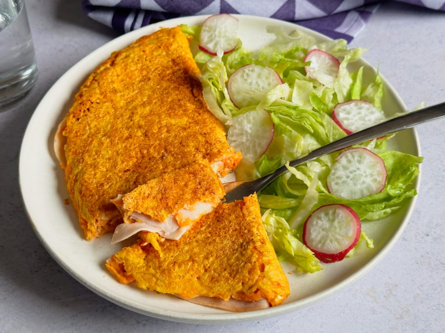

Tortilla de zanahoria

“Cena rica y saludable en menos de diez minutos. ¿Te animas? Entonces, no
dejes de probar esta tortilla de zanahoria rallada rellena de jamón de
pavo.”
Ingredientes
- Zanahoria
- Jamón de pavo
- Huevo
- Harina de avena
- Sal
- Aceite de oliva
Pasos
- Pela y ralla una zanahoria.
- Casca los huevos en un recipiente y bátelos.
- Añade la zanahoria rallada y la harina de avena al huevo batido, un poco de sal y mezcla todo.
- Echa un poco de aceite en una sartén. Cuando esté caliente vierte lo anterior y cocina a fuego medio. Cuando veas que comienza a cocinarse, extiende las lonchas de pavo. Con ayuda de una espátula y con cuidado, dobla la tortilla por la mitad.
- Cocina a fuego medio-bajo durante un ratito y dale la vuelta con la ayuda de la espátula. Si te resulta más fácil, puedes ayudarte de un plato para darle la vuelta (como si fuera tortilla de patatas).
Volver a Inicio